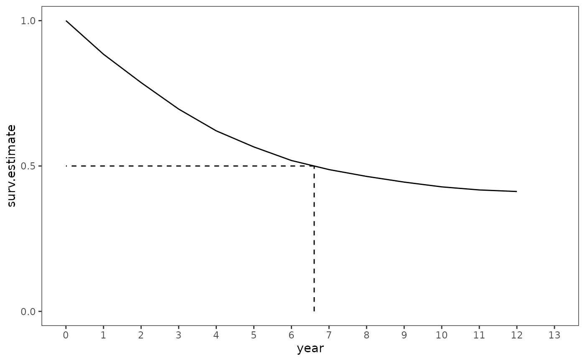

Chapter 10: Describing discrete-time event occurrence data
Source:vignettes/articles/chapter-10.Rmd
chapter-10.RmdThis chapter is under construction.
library(alda)
library(dplyr)
#>
#> Attaching package: 'dplyr'
#> The following objects are masked from 'package:stats':
#>
#> filter, lag
#> The following objects are masked from 'package:base':
#>
#> intersect, setdiff, setequal, union
library(tidyr)
library(ggplot2)
library(survival)
library(broom)10.1 The Life Table
Table 10.1, page 327:
# A life table is the tabular form of a survival curve, so begin by fitting a
# Kaplan-Meir curve to the data.
teachers_fit <- survfit(Surv(years, 1 - censor) ~ 1, data = teachers)
table_10.1 <- teachers_fit |>
# Add a starting time (time 0) for the table.
survfit0() |>
tidy() |>
# The summary of the fit gives most of what we want, but to match Table 10.1
# we need to do a little more wrangling.
select(-c(std.error:conf.low)) |>
mutate(
interval = paste0("[", time, ", ", time + 1, ")"),
haz.estimate = n.event / n.risk
) |>
rename(year = time, surv.estimate = estimate) |>
relocate(
year, interval, n.risk, n.event, n.censor, haz.estimate, surv.estimate
)
table_10.1
#> # A tibble: 13 × 7
#> year interval n.risk n.event n.censor haz.estimate surv.estimate
#> <dbl> <chr> <dbl> <dbl> <dbl> <dbl> <dbl>
#> 1 0 [0, 1) 3941 0 0 0 1
#> 2 1 [1, 2) 3941 456 0 0.116 0.884
#> 3 2 [2, 3) 3485 384 0 0.110 0.787
#> 4 3 [3, 4) 3101 359 0 0.116 0.696
#> 5 4 [4, 5) 2742 295 0 0.108 0.621
#> 6 5 [5, 6) 2447 218 0 0.0891 0.566
#> 7 6 [6, 7) 2229 184 0 0.0825 0.519
#> 8 7 [7, 8) 2045 123 280 0.0601 0.488
#> 9 8 [8, 9) 1642 79 307 0.0481 0.464
#> 10 9 [9, 10) 1256 53 255 0.0422 0.445
#> 11 10 [10, 11) 948 35 265 0.0369 0.428
#> 12 11 [11, 12) 648 16 241 0.0247 0.418
#> 13 12 [12, 13) 391 5 386 0.0128 0.41210.2 A Framework for Characterizing the Distribution of Discrete-Time Event Occurrence Data
Figure 10.1, page 333:
ggplot(table_10.1, aes(x = year, y = haz.estimate)) +
geom_line() +
scale_x_continuous(breaks = 0:13, limits = c(1, 13)) +
scale_y_continuous(breaks = c(0, .05, .1, .15), limits = c(0, .15)) +
coord_cartesian(xlim = c(0, 13))
#> Warning: Removed 1 row containing missing values or values outside the scale range
#> (`geom_line()`).
# First interpolate median lifetime
median_lifetime <- table_10.1 |>
# Get the row indices for the first survival estimate immediately below and
# immediately above 0.5. This will only work correctly if the values are in
# descending order, otherwise min() and max() must be swapped. By default, the
# survival estimates are in descending order, however, I've added the
# redundant step of ensuring they are here for demonstration purposes.
arrange(desc(surv.estimate)) |>
slice(min(which(surv.estimate <= .5)), max(which(surv.estimate >= .5))) |>
select(year, surv.estimate) |>
# Linearly interpolate between the two values of the survival estimates that
# bracket .5 following Miller's (1981) equation.
summarise(
year =
min(year) +
((max(surv.estimate) - .5) /
(max(surv.estimate) - min(surv.estimate))) *
((min(year) + 1) - min(year)),
surv.estimate = .5
)
ggplot(table_10.1, aes(x = year, y = surv.estimate)) +
geom_line() +
geom_segment(
aes(xend = year, y = 0, yend = .5), data = median_lifetime, linetype = 2
) +
geom_segment(
aes(xend = 0, yend = .5), data = median_lifetime, linetype = 2
) +
scale_x_continuous(breaks = 0:13) +
scale_y_continuous(breaks = c(0, .5, 1), limits = c(0, 1)) +
coord_cartesian(xlim = c(0, 13))
10.3 Developing Intuition About Hazard Functions, Survivor Functions, and Median Lifetimes
Figure 10.2, page 340:
10.4 Quantifying the Effects of Sampling Variation
Table 10.2, page 349:
summary(teachers_fit)
#> Call: survfit(formula = Surv(years, 1 - censor) ~ 1, data = teachers)
#>
#> time n.risk n.event survival std.err lower 95% CI upper 95% CI
#> 1 3941 456 0.884 0.00510 0.874 0.894
#> 2 3485 384 0.787 0.00652 0.774 0.800
#> 3 3101 359 0.696 0.00733 0.682 0.710
#> 4 2742 295 0.621 0.00773 0.606 0.636
#> 5 2447 218 0.566 0.00790 0.550 0.581
#> 6 2229 184 0.519 0.00796 0.504 0.535
#> 7 2045 123 0.488 0.00796 0.472 0.504
#> 8 1642 79 0.464 0.00800 0.449 0.480
#> 9 1256 53 0.445 0.00811 0.429 0.461
#> 10 948 35 0.428 0.00827 0.412 0.445
#> 11 648 16 0.418 0.00848 0.401 0.435
#> 12 391 5 0.412 0.00870 0.396 0.430
teachers_fit |>
tidy() |>
mutate(
# The tidy() method for survfit objects returns the standard error for the
# cumulative hazard instead of the survival probability. Multiplying the
# survival estimate with the cumulative hazard's standard error will return
# the standard error for the survival probability. Note that it is unlikely
# the tidy() method will ever change to return the the standard error for
# the survival probability instead. See:
# - https://github.com/tidymodels/broom/pull/1162
# Other transformations of the survival probability can be found here:
# - https://stat.ethz.ch/pipermail/r-help/2014-June/376247.html
surv.std.error = estimate * std.error,
haz.estimate = n.event / n.risk,
haz.std.error = sqrt(haz.estimate * (1 - haz.estimate) / n.risk),
sqrt = (std.error)^2 / (estimate)^2
) |>
select(
year = time,
n.risk,
haz.estimate,
haz.std.error,
surv.estimate = estimate,
sqrt,
surv.std.error
)
#> # A tibble: 12 × 7
#> year n.risk haz.estimate haz.std.error surv.estimate sqrt surv.std.error
#> <dbl> <dbl> <dbl> <dbl> <dbl> <dbl> <dbl>
#> 1 1 3941 0.116 0.00510 0.884 4.25e-5 0.00510
#> 2 2 3485 0.110 0.00530 0.787 1.11e-4 0.00652
#> 3 3 3101 0.116 0.00575 0.696 2.29e-4 0.00733
#> 4 4 2742 0.108 0.00592 0.621 4.02e-4 0.00773
#> 5 5 2447 0.0891 0.00576 0.566 6.09e-4 0.00790
#> 6 6 2229 0.0825 0.00583 0.519 8.74e-4 0.00796
#> 7 7 2045 0.0601 0.00526 0.488 1.12e-3 0.00796
#> 8 8 1642 0.0481 0.00528 0.464 1.38e-3 0.00800
#> 9 9 1256 0.0422 0.00567 0.445 1.68e-3 0.00811
#> 10 10 948 0.0369 0.00612 0.428 2.03e-3 0.00827
#> 11 11 648 0.0247 0.00610 0.418 2.36e-3 0.00848
#> 12 12 391 0.0128 0.00568 0.412 2.62e-3 0.0087010.5 A Simple and Useful Strategy for Constructing the Life Table
Figure 10.4, page 353:
filter(teachers, id %in% c(20, 126, 129))
#> # A tibble: 3 × 3
#> id years censor
#> <fct> <dbl> <dbl>
#> 1 20 3 0
#> 2 126 12 0
#> 3 129 12 1
teachers_pp <- teachers |>
reframe(
year = 1:max(years),
event = if_else(year == years & censor == 0, 1, 0),
.by = id
)
teachers_pp |>
filter(id %in% c(20, 126, 129)) |>
print(n = 27)
#> # A tibble: 27 × 3
#> id year event
#> <fct> <int> <dbl>
#> 1 20 1 0
#> 2 20 2 0
#> 3 20 3 1
#> 4 126 1 0
#> 5 126 2 0
#> 6 126 3 0
#> 7 126 4 0
#> 8 126 5 0
#> 9 126 6 0
#> 10 126 7 0
#> 11 126 8 0
#> 12 126 9 0
#> 13 126 10 0
#> 14 126 11 0
#> 15 126 12 1
#> 16 129 1 0
#> 17 129 2 0
#> 18 129 3 0
#> 19 129 4 0
#> 20 129 5 0
#> 21 129 6 0
#> 22 129 7 0
#> 23 129 8 0
#> 24 129 9 0
#> 25 129 10 0
#> 26 129 11 0
#> 27 129 12 0Table 10.3, page 355:
teachers_pp |>
group_by(year) |>
count(event) |>
pivot_wider(names_from = event, names_prefix = "event_", values_from = n) |>
mutate(
total = event_0 + event_1,
p.event_1 = event_1 / total
)
#> # A tibble: 12 × 5
#> # Groups: year [12]
#> year event_0 event_1 total p.event_1
#> <int> <int> <int> <int> <dbl>
#> 1 1 3485 456 3941 0.116
#> 2 2 3101 384 3485 0.110
#> 3 3 2742 359 3101 0.116
#> 4 4 2447 295 2742 0.108
#> 5 5 2229 218 2447 0.0891
#> 6 6 2045 184 2229 0.0825
#> 7 7 1922 123 2045 0.0601
#> 8 8 1563 79 1642 0.0481
#> 9 9 1203 53 1256 0.0422
#> 10 10 913 35 948 0.0369
#> 11 11 632 16 648 0.0247
#> 12 12 386 5 391 0.0128